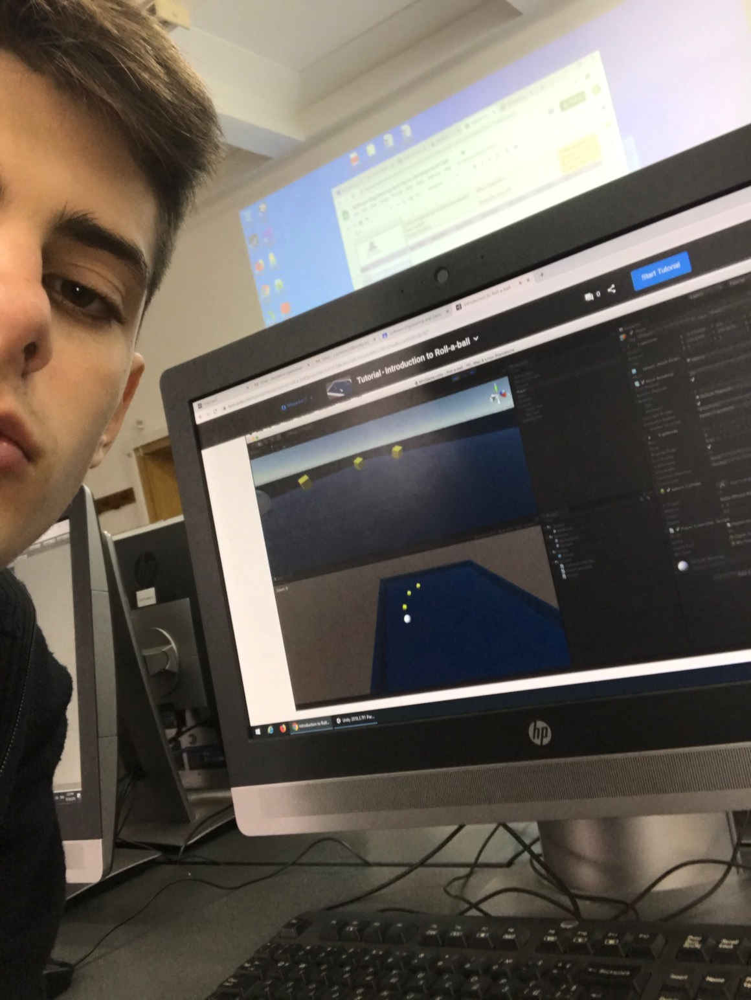

Yavor's Website

About me

My name is Yavor Goranov. I am from Sofia. I study in the American College of Sofia. I am senior and I from section 12/3. I am almost 18 yeaes old. I like to play basketball and I have been a part of the ACS Varsity team for the last 3 years. I have chosen to study Spanish. I like computers an proggraming, which led to my decision on taking on the IT Profile.
About IT
In 12th grade Informatics we have been learning HTML and CSS properties for the entire semester. The platfrom which we used to study is Khan Academy. It was very useful, easy and pleasruable to study from there since they explain everything in details and give many interactive examples and problems to work on. If we needed any help or had question, Ms. Kondakova was always here to answer our question. HTML is something new to me, however I really enjoy learning it and programming on it. For sure I have added a new skillset to my list. I hope I am able to learn a bit more challening and complex sides of HTML, since I would like to be able to help my father with his company in the future, from a website side.<